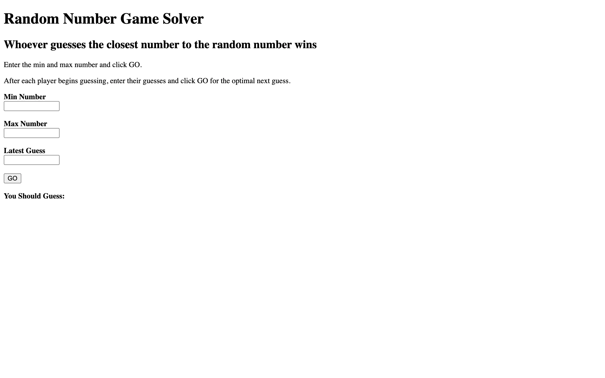

There's a common party game or icebreaker where someone picks a random number in a range, say 1 to 100, and everyone guesses. Closest guess wins. If you're the only player it's just binary search: guess the midpoint, adjust based on feedback. But when other people are guessing too, the optimal strategy changes. You don't want to guess the midpoint of the full range. You want to guess the midpoint of the largest unclaimed region, because that's where you have the highest probability of being the closest.

{kind=link}
The algorithm
You enter a minimum and maximum to define the range. As guesses are made (yours and other players'), you enter each one. The app collects all known numbers: the bounds and every guess so far. It sorts them, computes the gap between each consecutive pair, finds the largest gap, and recommends guessing the midpoint of that gap.
This is a greedy approach. Each guess maximally reduces the largest interval of uncertainty. If the range is 1-100 and someone guesses 30, the two regions are 1-30 and 30-100. The second region is larger, so the optimal next guess is 65 (the midpoint of 30 and 100). If another player then guesses 80, the regions become 1-30, 30-80, and 80-100. The largest is 30-80, so you guess 55.
It's the same logic as binary search when you're alone, but it adapts to other players' guesses by treating them as additional partition points. The strategy maximizes your expected coverage of the number line.

{kind=link}
When this actually matters
In practice, most people guess round numbers. They cluster around multiples of 10 and especially around 50. If you've ever played this game in a group, you've seen three people all guess numbers in the 40-60 range while the extremes go uncovered. The solver exploits this by always targeting the largest open gap, which tends to be far from the popular guesses.
I originally built this for a specific situation: a recurring office game where the prize was picking the lunch restaurant. I kept losing because I was guessing "intuitively" and competing with other people's intuitions for the same part of the number line. After switching to this strategy I won noticeably more often.
Implementation
The UI has three input fields (min, max, latest guess) and a "GO" button. The recommended guess displays below. It's vanilla JavaScript and HTML, no dependencies. The entire logic is about 20 lines of code.